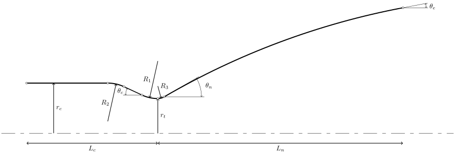

Minimal Simulation¶
This tutorial builds and analyses a small regeneratively cooled nitrous-oxide/ethanol rocket engine. It is intended to introduce the principal Pyskyfire objects and the normal workflow for a thrust-chamber thermal analysis. This tutorial is focused on showcasing Pyskyfire capabilities, and is not focused on engine design.
The complete, runnable source is maintained in examples/minimal/minimal_sim.py.
Prerequisites¶
Install Pyskyfire into your current environemnt, then run:
python examples/minimal/minimal_sim.py
The script builds a thrust chamber, and then runs a regenerative cooling analysis. It then postprocesses the results, giving you a few options to view the generated data: Either as standalone html graphs, or as a compiled report output as minimal_report.html.
What you will build¶
The example uses a 5 kN engine with a 20 bar chamber pressure, an area ratio of 10, nitrous oxide as oxidizer, and ethanol as both fuel and coolant. It uses a single, helical, square-channel cooling circuit running from nozzle exit to chamber inlet.
Define the engine design point¶
Start with the intended chamber conditions, thrust, nozzle geometry, coolant inlet state, and the thermal/geometry choices for the cooling circuit.
params = dict(
p_c=20e5, # Chamber Pressure (Pa)
F=10e3, # Thrust (N)
eps=6, # Nozzle area ratio
L_star=1.2, # Combustion chamber characteristic length
MR=2.8, # Mixture ratio
AR_c=1.5, # Chamber aspect ratio
cea_fu=psf.common.Fluid(type="fuel", propellants=["C2H5OH"], fractions=[1.0]), # Ethanol
cea_ox=psf.common.Fluid(type="oxidizer", propellants=["N2O"], fractions=[1.0]), # Nitrous oxide
coolprop_fu=psf.common.Fluid(type="fuel", propellants=["ethanol"], fractions=[1.0]), # Ethanol
T_coolant_in=273.15, # Coolant inlet temperature
p_coolant_in=23e5, # Coolant inlet pressure
material=psf.common.solids.StainlessSteel304, # Wall material
wall_thickness=0.5e-3, # Wall thickness
n_channels=60, # Number of cooling channels
blockage_ratio=0.1, # Fraction of cooling channel cross section filled with ribs
roughness_height=10e-6, # Cooling channel roughness parameter
helix_angle=45, # Cooling channel helix angle
channel_height=2e-3 # Cooling channel height
)
cea_fu and cea_ox define the propellants passed to the NASA CEA-backed combustion model. coolprop_fu defines the coolant passed to the CoolProp-backed transport-property model. Different backends are used for the coolant and the combustion gas, NASA CEA for the hot gas, CoolProp for the coolant, hence the need to define the ethanol twice.
p_c, F, eps, L_star, and MR establish the thermodynamic design point. AR_c represents the chamber aspect ratio, defined as
where \(L_c\) is the chamber length, and \(S_c\) is the area of the cross section of the chamber when the section plane passes through the chamber axis.

The remaining inputs define the cooling wall and flow channels: material, hot-gas-to-coolant wall thickness, channel count, rib blockage, coolant-side roughness, helix angle and channel height.
Compute the combustion and coolant models¶
Pyskyfire uses the supplied design point to construct an aerothermodynamic model of the combustion gases. Upon initialisation, the aerothermodynamics class calculates many parameters about the engine. In this example, the ideal chamber volume, throat radius and fuel mass flow the class has calculated is used further.
# Create hot gas property object:
aerothermodynamics = psf.skycea.Aerothermodynamics.from_F_eps_Lstar(
fu=params["cea_fu"], # Fuel input
ox=params["cea_ox"], # Ox input
MR=params["MR"], # Mixture ratio
p_c=params["p_c"], # Chamber pressure
F=params["F"], # Thrust
eps=params["eps"], # Area ratio
L_star=params["L_star"], # Characteristic length
)
params["V_c"] = aerothermodynamics.V_c # Retrieve calculated chamber volume
params["r_t"] = aerothermodynamics.r_t # Retrieve calculated throat radius
params["mdot_fu"] = aerothermodynamics.mdot_fu # retrieve fuel mass flow rate
# Create coolant property object:
coolant_transport = psf.skycea.CoolantTransport(params["coolprop_fu"]) #
The aerothermodynamics class has multiple constructors allowing you to choose which set of inputs is used to construct the hot gas properties. In this example from_F_eps_Lstar is used. See other options in Aerothermodynamics. The calculated V_c, r_t and mdot_fu are inserted into params for convenience. CoolantTransport supplies coolant thermodynamic and transport properties.
Generate the thrust-chamber contour¶
Next, we are going to create a nozzle contour. We can choose between a conical nozzle and a bell (Rao) nozzle. The resulting axial and radial coordinates are stored in a Contour object.
# Calculate contour points
xs, rs = psf.regen.contour.get_contour(
V_c=params["V_c"], # Chamber volume
AR_c=params["AR_c"], # Chamber aspect ratio
r_t=params["r_t"], # Throat radius
area_ratio=params["eps"], # Area ratio
nozzle="rao", # Type of nozzle
R_1f=1, # Throat radius parameter
R_2f=2, # Chamber-to-contraction radius parameter
R_3f=0.3, # Throat-to-nozzle radius parameter
)
# Create contour object
contour = psf.regen.Contour(xs, rs, name="Minimal Contour")
get_contour exposes further shaping parameters beyond those used here. The three curvature factors, R_1f, R_2f, and R_3f, affect the chamber-to-throat and nozzle transitions.
Define the walls¶
Create a Wall to represent the material layer separating the coolant from the combustion gases. Multiple wall layers are possible, but we keep it simple here.
wall = psf.regen.Wall(
material=params["material"],
thickness=params["wall_thickness"],
)
Define the regenerative-cooling circuit¶
A CoolingCircuit combines the coolant model, channel cross-section, channel placement, wall stack, roughness, and dimensions. Pyskyfire can represent multiple circuits, including circuits covering different spans of the contour or interlacing with one another. This tutorial makes it simple with one circuit running from the nozzle exit to the chamber inlet.
cross_section = psf.regen.CrossSectionSquared(blockage_ratio=params["blockage_ratio"])
def channel_height_function(x):
return params["channel_height"]
def helix_angle_function(x):
return params["helix_angle"] * 3.14 / 180
placement = psf.regen.SurfacePlacement(
n_channel_positions=params["n_channels"],
helix_angle=helix_angle_function,
)
cooling_circuit = psf.regen.CoolingCircuit(
name="Cooling Pass",
contour=contour,
coolant_transport=coolant_transport,
cross_section=cross_section,
span=[1.0, -1.0],
placement=placement,
walls=[wall],
roughness=params["roughness_height"],
channel_height=channel_height_function,
)
The constant channel_height_function creates 2 mm-high channels everywhere on the engine. SurfacePlacement maps channels around the thrust-chamber surface. Here the channels follow a constant 45-degree helix. The span=[1.0, -1.0] sets the coolant flow direction from the bottom of the nozzle towards the chamber.
Assemble the thrust chamber¶
ThrustChamber is the composite object that joins the contour, combustion model, and cooling circuit. It computes geometry-dependent quantities that cannot be determined by the individual objects alone.
thrust_chamber = psf.regen.ThrustChamber(
contour=contour,
combustion_transport=aerothermodynamics,
cooling_circuits=[cooling_circuit],
n_nodes=150,
)
Before solving the heat-transfer problem, it may be nice to inspect the generated cooling-channel geometry. See the report section for visualisation options. Bellow is one possibility, a 3d representation of the thrust chamber created.
This view is useful for checking that channels cover the intended contour span and have the expected placement before interpreting a thermal result. Unfortunately, rib visualisation is currently not implemented, so cooling channels will always cover the entire chamber wall in the visualsation (but not in simulation). A fix for this will be implemented in the future.
Run the steady-state cooling analysis¶
The cooling simulation needs a coolant inlet temperature, inlet pressure, and mass flow rate. This simple engine assumes that all fuel supplied to the chamber first passes through the cooling circuit, so the coolant mass flow is the fuel mass flow calculated by the combustion model. In the case where there is multiple cooling circuits, the circuit index indicates which one should be used in the given simulation.
boundary_conditions = psf.regen.BoundaryConditions(
T_coolant_in=params["T_coolant_in"],
p_coolant_in=params["p_coolant_in"],
mdot_coolant=params["mdot_fu"],
)
cooling_data = psf.regen.steady_heating_analysis(
thrust_chamber,
n_nodes=100,
circuit_index=0,
boundary_conditions=boundary_conditions,
output=True,
)
steady_heating_analysis returns cooling_data, which contains the axial solution for coolant state, wall temperatures, heat flux, flow velocity, and related quantities. Below the heat flux is shown as an example.
Generate and inspect the report¶
The example uses Pyskyfire’s report system to collect input data, calculated optimal values, geometry plots, cooling results, combustion transport properties, and selected through-wall temperature profiles into a portable HTML file.
if output_dir is None:
output_dir = Path(__file__).parent
output_dir.mkdir(parents=True, exist_ok=True)
report = psf.viz.Report("Minimal Engine")
# Parameters tab
# --------------
tab_params = report.add_tab("Parameters")
tab_params.add_table(
params,
caption="Input Parameters",
key_title="Parameter",
value_title="Value",
precision=3,
)
tab_params.add_table(
thrust_chamber.combustion_transport.optimum,
caption="Optimal Values",
key_title="Parameter",
value_title="Value",
precision=3,
)
# Overview tab
# ------------
tab_overview = report.add_tab("Engine Overview")
# 3D engine
engine_viewer = psf.viz.make_engine_3d(thrust_chamber, show=False)
engine_viewer.save_html(output_dir / "engine-3d.html")
tab_overview.add_iframe(
engine_viewer.data_url,
caption="Engine 3D",
)
engine_viewer.close()
# Engine contour
contour_plot = psf.viz.PlotContour(thrust_chamber.contour)
contour_plot.save_html(output_dir / "contour.html")
tab_overview.add_figure(contour_plot)
# Cooling data tab
# ----------------
tab_cooling_data = report.add_tab("Cooling Data")
tab_cooling_data.add_figure(
psf.viz.PlotWallTemperature(
cooling_data,
plot_hot=True,
plot_coolant_wall=True,
)
)
heat_flux = psf.viz.PlotHeatFlux(cooling_data)
heat_flux.save_html(output_dir / "heat-flux.html")
tab_cooling_data.add_figure(psf.viz.PlotCoolantTemperature(cooling_data))
tab_cooling_data.add_figure(psf.viz.PlotCoolantPressure(cooling_data))
tab_cooling_data.add_figure(heat_flux)
tab_cooling_data.add_figure(psf.viz.PlotVelocity(cooling_data))
tab_thrust_chamber = report.add_tab("Thrust Chamber Properties")
tab_thrust_chamber.add_figure(psf.viz.PlotCoolantArea(thrust_chamber))
tab_thrust_chamber.add_figure(psf.viz.PlotHydraulicDiameter(thrust_chamber))
tab_thrust_chamber.add_figure(psf.viz.PlotRadiusOfCurvature(thrust_chamber))
tab_thrust_chamber.add_figure(psf.viz.PlotdAdxThermalHotGas(thrust_chamber))
tab_thrust_chamber.add_figure(psf.viz.PlotdAdxThermalCoolant(thrust_chamber))
tab_thrust_chamber.add_figure(psf.viz.PlotdAdxCoolantArea(thrust_chamber))
# Combustion calculations tab
# ---------------------------
tab_combustion = report.add_tab("Combustion")
for prop in ["M", "gamma", "T", "p", "h", "cp", "k", "mu", "Pr", "rho", "a"]:
tab_combustion.add_figure(
psf.viz.PlotTransportProperty(
thrust_chamber.combustion_transport,
prop=prop,
)
)
# Thermal gradient tab
# --------------------
tab_thermal_gradient = report.add_tab("Thermal Gradient")
tab_thermal_gradient.add_figure(
psf.viz.PlotTemperatureProfile(cooling_data, thrust_chamber, 0, -0.1)
)
tab_thermal_gradient.add_figure(
psf.viz.PlotTemperatureProfile(cooling_data, thrust_chamber, 0, 0)
)
tab_thermal_gradient.add_figure(
psf.viz.PlotTemperatureProfile(cooling_data, thrust_chamber, 0, 0.05)
)
# Save report
# -----------
report_path = output_dir / "minimal-report.html"
report.save_html(report_path)
print(f"Report saved to {report_path}")
When the scripts completes, a few standalone interactive html graphs have been made. A comprehensive report is compiled into minimal-report.html. You can view the report here:
Minimal Simulation Report